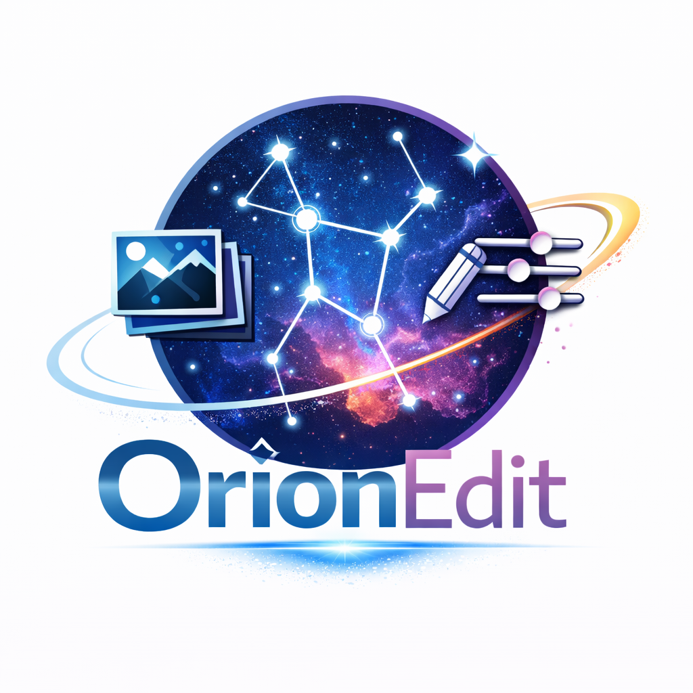
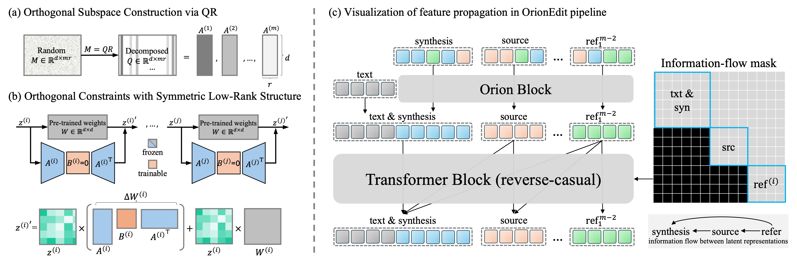
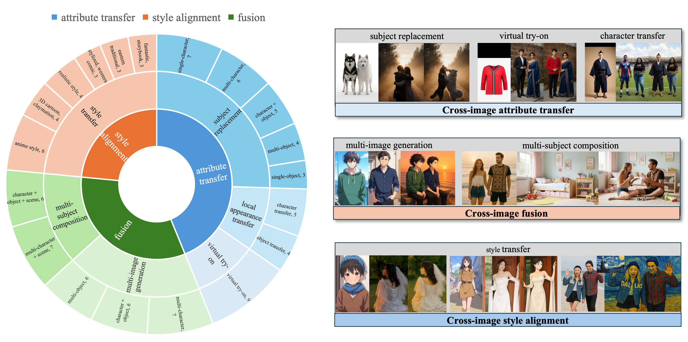

OrionEdit: Bridging Reference and Source Images for Generalized Cross-Image Editing

OrionEdit: Bridging Reference and Source Images for Generalized Cross-Image Editing
📝 Abstract
Multimodal image synthesis has achieved remarkable progress in producing visually coherent results, yet most editing methods still rely on semantic instructions, which is less direct than using visual guidance. Recently, a new paradigm has emerged that focuses on "editing one image from another", enabling more direct and interpretable manipulation through reference exemplars. In this work, we formalize this paradigm as Cross-image Editing, which modifies a source image under the guidance of one or more references, encompassing subject replacement, style transfer, image completion, and other reference-to-source tasks.
To address this, we introduce OrionEdit, a unified framework that regulates visual attribute transfer through two key mechanisms:
- Symmetric Orthogonal Subspace Update: partitions image features into branch-specific subspaces, mitigating feature entanglement and preserving subject identity.
- Reverse-Causal Attention with Information-Flow Mask: enforces unidirectional dependencies in the latent space to stabilize cross-image conditioning.
Built on standard diffusion backbones, OrionEdit enables zero-shot editing with multiple references and yields consistent gains over open-source baselines, rivaling proprietary models in fidelity and disentanglement.
🔍 Methodology

OrionEdit is built on two complementary designs: branch-specific orthogonal subspaces for disentangling multiple visual streams, and a reverse-causal attention mask for regulating how information flows from references to the final synthesis image.
1. Symmetric Orthogonal Subspace Update
- Assigns each latent branch its own orthogonal basis, enabling branch-specific adaptation.
- Uses a symmetric low-rank update to project features into a branch subspace and reconstruct them back.
- Keeps the orthogonal bases frozen, while learning only the compact latent adapter for each branch.
ΔW(i) = A(i) B(i) (A(i))⊤
A(i) defines the fixed orthogonal subspace of branch i,
while B(i) captures its trainable incremental update.
2. Orthogonality Guarantee
- Different branch updates are mutually orthogonal in the Frobenius inner-product sense.
- This reduces feature entanglement across synthesis, source, and reference streams.
- High-level editing semantics are separated across branches, while the shared backbone still preserves low-level texture and structure.
<ΔWu, ΔWv>F = 0 (u ≠ v)
3. Reverse-Causal Attention Mask
- Concatenates all branch tokens inside the Orion Transformer block.
- Applies a strictly upper block-triangular mask to control cross-branch attention.
- Earlier groups can only read from the same group or later groups, enforcing directional dependency.
reference → source → synthesis
4. Controlled Information Flow
- Synthesis tokens can read from source and reference tokens, but cannot write back.
- Source tokens can read from references, but cannot access synthesis or text tokens.
- Reference branches remain read-only with respect to one another, preventing contamination.
Why OrionEdit uses orthogonality differently
Rather than treating orthogonal LoRA branches as isolated concept containers, OrionEdit uses orthogonality as an information dispatcher.
Each branch update is closed inside its own subspace through the symmetric mapping ΔWi = AiBiAi⊤, which keeps branch-wise updates separated without introducing extra orthogonality regularization.
Figure on the right side provides the intuitive view of this design. The reference branches do not simply “store” different concepts; instead, they are routed through a reverse-causal pathway so that information propagates from reference → source → synthesis. This makes feature transfer more disciplined, preserves source structure more reliably, and keeps the model compatible with zero-initialized adaptation.

🗂️ OrionEditBench
Existing datasets rarely follow the reference–source–synthesis format required for cross-image editing. To address this gap, we build OrionEditBench, a benchmark designed for systematic evaluation of reference-guided image editing.
OrionEditBench is constructed from curated synthetic pairs generated with Nano-Banana and GPT-4o, together with partially public data sources. It covers three representative task families: attribute transfer, fusion-based generation, and style alignment, including cases such as subject replacement, virtual try-on, multi-subject composition, and reference-guided stylization.
The full training setup further includes diverse single-image data to preserve general generation ability. A preview of OrionEditBench is shown below. The released benchmark is available on Hugging Face.

📊 Results
We focus here on the visual results of OrionEdit. The examples below cover the main qualitative comparison in the paper, followed by extended fusion, composition, style-transfer, virtual try-on, and additional cross-image editing cases.
1. Main Qualitative Comparison
Figure bellow highlights the core subject appearance replacement setting. OrionEdit transfers identity more faithfully while preserving the source composition and spatial structure. Compared with strong baselines, it more consistently avoids identity leakage, feature blending, and geometry drift.

2. Cross-image Fusion
The next gallery groups the fusion-oriented results. First figure bellow studies multi-image generation under semantically similar references, a setting where concept entanglement is especially severe. Second figure extends this to source-conditioned multi-subject composition, where viewpoint consistency and layout preservation become critical.
This gallery rotates automatically. Hover over it to pause.
Multi-image Generation

OrionEdit produces more distinct and identity-consistent subjects when the references are semantically close, preserving fine-grained cues such as clothing, hairstyle, and overall appearance while reducing blending artifacts.
Multi-subject Composition

Under source-scene constraints, OrionEdit keeps visual perspective and scene layout more stable across subjects, leading to smoother integration and more coherent multi-character compositions.
3. Style Alignment and Local Transfer
This gallery focuses on style transfer, virtual try-on, local appearance transfer, and broader editing cases. First figure shows the direct comparison on style alignment and garment transfer, while second and third figures extend the coverage to more diverse subject replacement, stylization, and try-on examples. Across these settings, OrionEdit better preserves source layout while merging reference attributes more naturally.
This gallery rotates automatically. Hover over it to pause.
Style Transfer, Virtual Try-On, and Local Appearance Transfer

Compared with the baselines, OrionEdit reaches a better trade-off between source preservation and reference-guided change, reducing texture incompatibility and the pasted-looking overlays that often appear in difficult cross-style edits.
More Cross-image Editing Cases

These examples emphasize subject replacement and source-aware editing, showing that OrionEdit can preserve scene composition while reliably substituting identity and appearance cues from the reference inputs.
More Cross-image Editing Cases

This set further highlights style transfer and virtual try-on scenarios, including strong domain gaps between realistic, anime, and stylized references, where OrionEdit keeps edits cleaner and more coherent.
🤗 Disclaimer
This repository is built upon Qwen-Image and is released under the Apache 2.0 License. We thank Magiclight.AI for their support in dataset collection and training resources. This project is intended for academic research and the AIGC community. Most images are AI-generated or from public datasets. For any concerns, please contact us; we will promptly review and remove inappropriate content.
⭐ Citation
If OrionEdit inspires your research, please consider giving this repo a star and citing our work:
@article{
title = {OrionEdit},
note = {Our paper has been accepted to CVPR 2026 main track. The official citation will be released upon publication.}
}